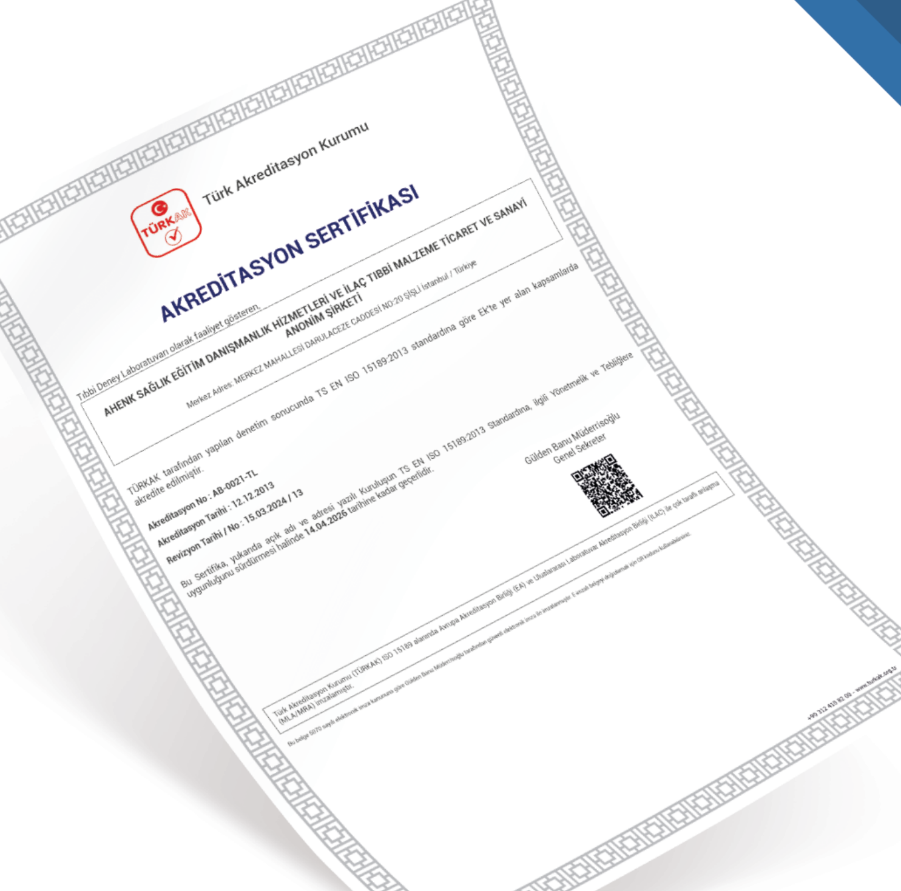

KADIN MİKROBİYOTASI DEĞERLENDİRMESİNDE
FEMOBIOME II

FEMOBIOME II, kadın ürogenital mikrobiyotasının kapsamlı değerlendirmesi için tasarlanmış real-time PCR bazlı moleküler tanı testidir. Tek bir testte normobiyota, fırsatçı mikroorganizmalar, zorunlu patojenler, virüsler ve mantarları analiz eder.
FEMOBIOME II testi, Lactobacillus türlerini tür düzeyinde ayırt eder: L. crispatus, L. iners, L. jensenii/L. mulieris, L. gasseri/L. paragasseri. Bu detaylı tür ayrımı, mikrobiyota durumunun doğru değerlendirilmesi için kritik öneme sahiptir.
Cinsel yolla bulaşan enfeksiyon (CYBE) etkenleri olan Chlamydia trachomatis, Neisseria gonorrhoeae, Mycoplasma genitalium ve Trichomonas vaginalis tek testte taranarak asemptomatik ve subklinik enfeksiyonların dışlanması sağlanır.
Herpesvirüsler (HSV-1, HSV-2, CMV) ve yüksek riskli HPV tipleri (HPV 16, HPV 18, HPV 45, HPV 31/33/35/39/51/52/56/58/59/66/68) aynı test kapsamında değerlendirilir.
Grup B streptokok (Streptococcus agalactiae) kantitatif analizi özellikle gebelik planlaması ve gebelik döneminde kritik öneme sahiptir.
Test sonuçları, trafik ışığı sistemi ile klinik yorumlama kolaylığı sağlar: öbiyoz (yeşil), orta disbiyoz (sarı) ve şiddetli disbiyoz (kırmızı) şeklinde görsel değerlendirme sunar. Kişiselleştirilmiş rapor, doğrusal ve sütun histogramları ile detaylı mikrobiyota profilini içerir.
| Mikroorganizma | Klinik Önemi |
|---|---|
| NORMOBİYOTA | |
| Lactobacillus spp. (toplam) | Normal vajinal flora |
| L. crispatus | Tür düzeyinde ayrım |
| L. jensenii / L. mulieris | |
| L. gasseri / L. paragasseri | |
| L. iners | |
| Bifidobacterium spp. | Normal flora |
| AEROBLAR (Fırsatçı) | |
| Staphylococcus spp. | Fırsatçı aerobik mikroorganizmalar |
| Streptococcus spp. | |
| Streptococcus agalactiae (GBS) | |
| Enterobacteriaceae | |
| Enterococcus spp. / Haemophilus spp. | |
| ANAEROBLAR (BV İlişkili) | |
| Gardnerella vaginalis | BV ilişkili anaerobik fırsatçı mikroorganizmalar |
| Fannyhessea vaginae | |
| Mobiluncus spp. / Anaerococcus spp. / Peptostreptococcus spp. | |
| Bacteroides spp. / Porphyromonas spp. / Prevotella spp. | |
| Sneathia spp. / Leptotrichia spp. / Fusobacterium spp. | |
| Megasphaera spp. / Veillonella spp. / Dialister spp. | |
| BVAB1 / BVAB2 / BVAB3 | |
| MİKOPLAZMALAR | |
| Ureaplasma urealyticum / Ureaplasma parvum | Fırsatçı genital mikoplazmalar |
| Mycoplasma hominis | |
| MAYA MANTARLARI | |
| Candida spp. / Candida albicans | Kantitatif analiz |
| CİNSEL YOLLA BULAŞAN ENFEKSİYONLAR (CYBE) | |
| Chlamydia trachomatis | Zorunlu patojenler |
| Neisseria gonorrhoeae | |
| Mycoplasma genitalium | |
| Trichomonas vaginalis | |
| HERPESVİRÜSLER | |
| HSV-1, HSV-2, CMV | Üreme sağlığı açısından önemli |
| İNSAN PAPİLLOMAVİRÜSLERİ (HPV) | |
| HPV 16, HPV 18, HPV 45 | Yüksek riskli HPV tipleri (ayrı ayrı) |
| HPV 31/33/35/39/51/52/56/58/59/66/68 | Yüksek riskli HPV tipleri (gruplu) |

Laboratuvarımız TÜRKAK tarafından
TS EN ISO 15189 standartlarına göre akredite edilmiştir.